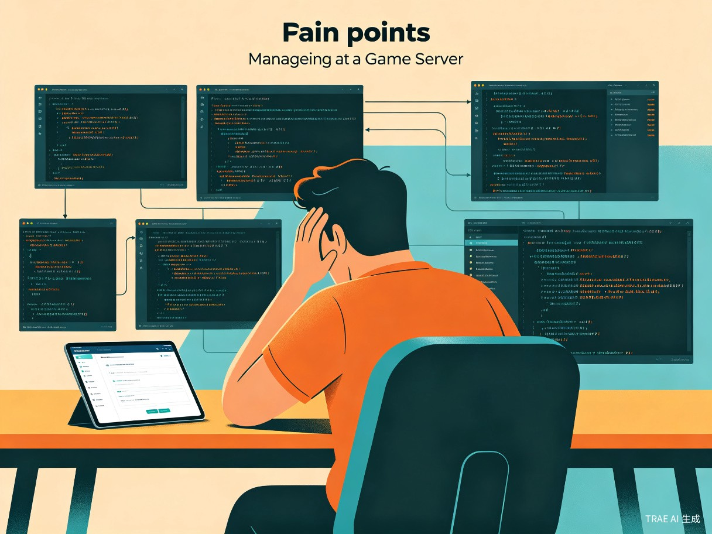
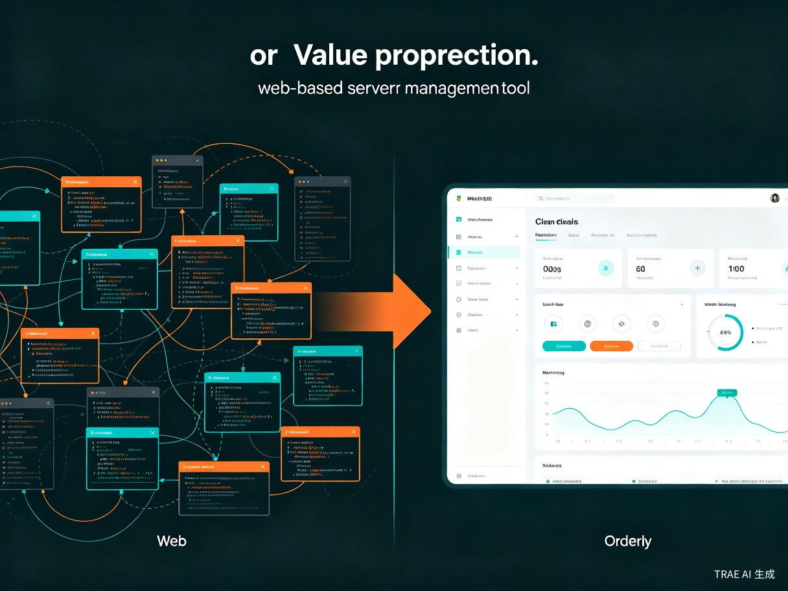

创意名称与介绍
创意名称
FactorioWebTS —— 异星工厂 Web 管理面板（TypeScript 版）
想解决什么问题
Factorio 多人服务器的管理长期依赖 SSH 命令行 操作，管理员需要记忆大量服务器指令、手动编辑配置文件、通过终端查看日志，门槛高且效率低下。对于社区公共服务器而言，还缺乏一套整合 商店、VIP、CDK 兑换码 等运营功能的统一平台。
为什么会想到做这个
大概是什么产品
一款基于 Node.js + TypeScript 的 Web 应用系统，部署在 Factorio 服务器所在机器或独立管理节点上，管理员通过浏览器即可完成服务器启停、玩家管理、Mod 安装、存档管理、社区运营（商店/VIP/CDK）等全部管理工作，支持 Docker 一键部署。
技术亮点
目标用户及痛点
面向哪些用户
个人服务器站长
自建 Factorio 服务器的玩家，通常只有 1-2 人负责维护，技术能力参差不齐，需要简单直观的管理工具。
社区/公共服务器运营者
运营面向公众开放的 Factorio 服务器，需要商店、VIP、CDK 兑换码等社区运营功能来维持服务器活力和收入。
小型游戏服务托管商
为多个客户提供 Factorio 服务器托管服务，需要批量管理和监控多台服务器的运行状态。
在什么场景下使用
当前痛点

| 痛点维度 | 具体问题 | 影响程度 |
|---|---|---|
| 操作门槛高 | 需要 SSH 登录服务器，记忆大量 Factorio 服务器指令和 Linux 命令 | 🔴🔴🔴🔴🔴 |
| 无法远程管理 | 离开电脑后无法处理紧急事务（如恶意玩家破坏、服务器崩溃） | 🔴🔴🔴🔴 |
| 缺乏实时监控 | 无法实时查看在线玩家、聊天内容、服务器性能指标 | 🔴🔴🔴🔴 |
| 运营功能缺失 | 商店、VIP、CDK 等社区运营功能需要额外开发或使用第三方工具 | 🔴🔴🔴 |
| Mod 管理繁琐 | 安装/更新 Mod 需要手动下载、解压、放置到正确目录 | 🔴🔴🔴 |
| 存档管理不便 | 备份、恢复、切换存档需要手动复制文件，容易出错 | 🔴🔴🔴 |
核心功能模块
FactorioWebTS 包含 18 个功能模块，覆盖服务器管理、社区运营、系统运维三大领域：
⚙️ 服务器管理
启动/停止/重启服务器、RCON 控制台、版本管理、健康检查
👥 玩家管理
在线玩家监控、玩家信息管理、投票踢人系统
💬 聊天管理
实时聊天监控、触发响应、定时消息、玩家事件通知
📦 商店 & VIP
游戏内商店系统、购物车、VIP 等级管理
🎁 CDK 系统
兑换码生成、发放、核销，支持批量操作
🛠️ Mod 管理
支持本地 Mod 及 Factorio Portal 在线搜索安装
💾 存档管理
存档上传/下载/切换/创建，数据库备份与恢复
📊 日志监控
实时日志查看、日志文件监控、故障排查
🔒 认证系统
JWT + bcrypt 用户认证，多管理员权限管理
价值与意义

效率提升
降低管理门槛：将复杂的命令行操作转化为直观的 Web 界面，管理员无需 Linux 运维知识即可完成全部管理工作。原本需要 10 分钟的 Mod 安装操作，在 Web 面板中只需几次点击。
实时响应能力：通过 WebSocket 实时通信，管理员可以像"盯着控制台"一样实时监控服务器状态。遇到恶意玩家或服务器异常，可以第一时间通过手机浏览器处理。
商业价值
赋能社区经济：内置商店、VIP、CDK 兑换码等运营模块，为公共服务器提供了完整的商业化基础设施。站长可以通过出售 VIP、游戏内物品等方式获得收入，从而覆盖服务器运营成本，形成可持续的社区生态。
开源生态建设：项目采用 Apache 2.0 开源协议，任何人都可以自由使用、修改和分发。这有助于吸引社区贡献者参与开发，快速迭代功能，形成良性的开源生态。
社会价值
降低游戏服务器运营门槛：让更多玩家有能力搭建和管理自己的 Factorio 服务器，促进 Factorio 社区的繁荣发展。特别是对于技术能力有限的玩家群体，FactorioWebTS 大幅降低了"从玩家到站长"的跨越难度。
技术示范意义：项目采用 TypeScript 全栈开发、模块化架构设计、事件驱动通信等现代技术实践，为同类游戏服务器管理工具的开发提供了优秀的技术参考范例。
技术架构与路线图
架构设计
FactorioWebTS 采用 模块化分层架构，每个业务模块包含四层结构：路由层（Routes）→ 服务层（Service）→ 数据访问层（Repository）→ 数据校验层（Schema）。底层基础设施包括：
🔌 事件总线
Event Bus 实现模块间解耦通信，支持发布/订阅模式
⚡ 命令总线
Game Command Bus 统一管理游戏内命令的发送与响应
📋 命令队列
Command Queue 确保高并发场景下命令的有序执行
🔗 RCON 连接池
连接池管理器优化 RCON 连接复用，提升通信效率
📄 日志监听器
Log Watcher 实时监听服务器日志文件变化
🚀 一键部署
支持 Docker / docker-compose / systemd 三种部署方式
项目路线图
Phase 1 — 核心管理功能
服务器控制、玩家管理、RCON 控制台、日志监控、认证系统
Phase 2 — 运营功能完善
商店系统、VIP 等级、CDK 兑换码、投票踢人、聊天管理
Phase 3 — 高级功能
Mod 在线搜索安装、存档管理、数据库备份恢复、定时消息
Phase 4 — 生态扩展
多服务器管理、API 开放平台、插件系统、国际化支持